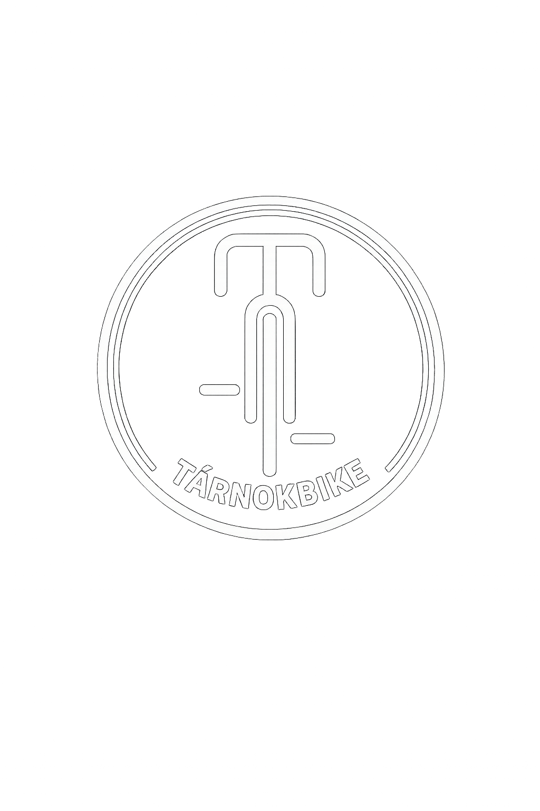

Magunkról
Az ötlet adott volt, mivel saját magunk is sokat kerékpározunk, és valljuk, hogy a kerékpár a legegyszerűbb közlekedési forma, amely egyben az egyik legegészségesebb kikapcsolódási lehetőség az egész család számára.
Cégünk 2009 óta folyamatosan bővül. Kezdetben kerékpárbérléssel és túrák szervezésével foglalkoztunk Budapesten. Később szervizt és kerékpárboltot nyitottunk, majd THULE boxok bérbeadásával és értékesítésével bővítettük szolgáltatásainkat.
Testvércégünk 2015-ben indította el első balatoni kerékpárkölcsönző szolgáltatását Badacsonyban, a Badacsony ABC mellett, ahol a bérbeadás mellett „rapid” szervizzel is segíti a bajba jutott kerékpárosokat.
A Tárnoki Kerékpárműhely 2016-ban kezdte meg működését, amely boltként és szervizként is üzemel.
2024-ben megnyitottuk második vidéki üzletünket Pázmándon, ahol családias környezetben várjuk kedves ügyfeleinket a BRINGOSZ Kerékpárműhely & Büfé falai között, profi szervizzel és finom falatokkal.
Elérhetőségeink
Mobil: +36 30 198 2662
2461 Tárnok, Rákóczi út 46/C
kerekparbolt.tarnok@gmail.com
Weboldal: tarnokbike.hu
Mobil: +36 30 256 0071
2476 Pázmánd, Széchenyi utca 6
bringosz01@gmail.com
Weboldal: bringosz.hu
Mobil: +36 30 520 0650
1052 Budapest, Semmelweis utca 14
bolt.bbtb@gmail.com
Weboldal: bbtb.hu
Mobil: +36 20 567 0367
8258 Badacsony, Egry stny 8.
farkasfamm@gmail.com